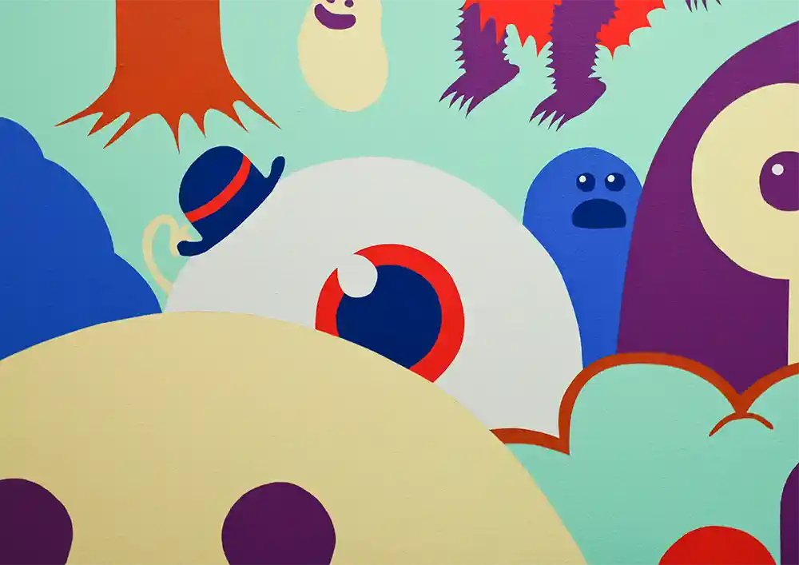
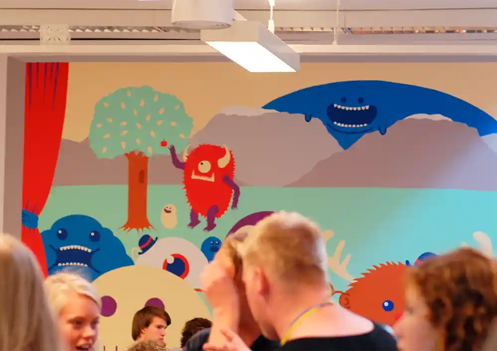
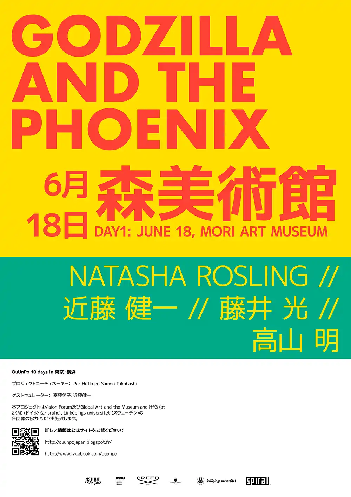
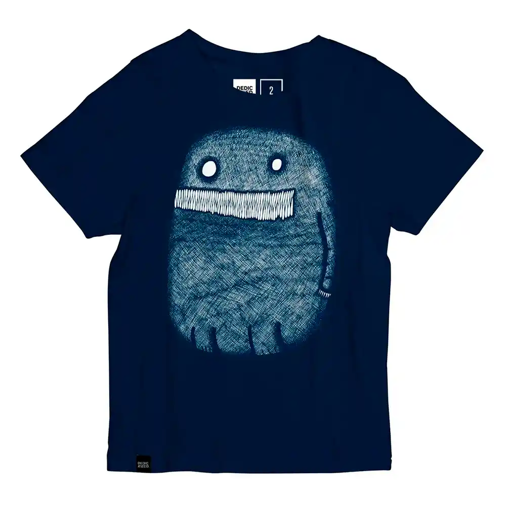
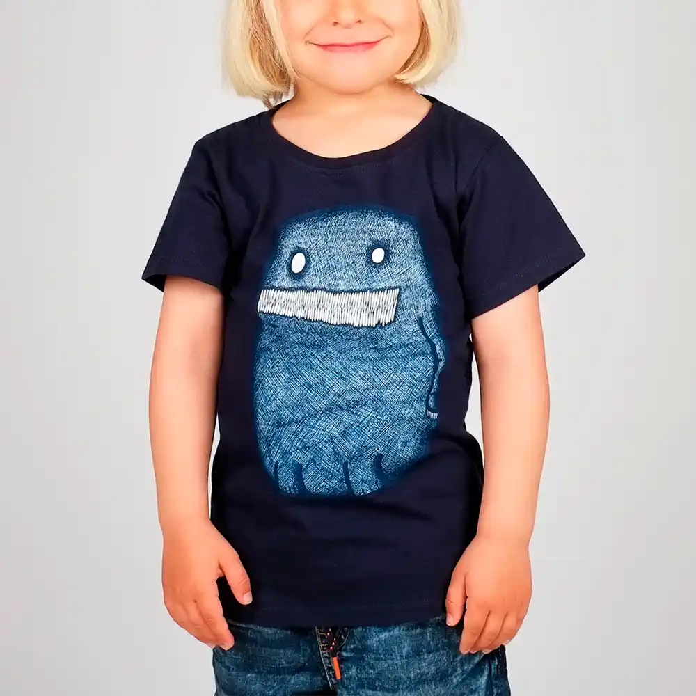

I februari 2024 lanserade Region Stockholm sin nya webbplats som är byggd från grunden med fokus
på invånarnas behov. Jag var
med i den senare delen av projektet där jag fokuserade på UX, tillgänglighet, innehåll och
testning.
Den nya webbplatsen rankas bland topp fem bland regionwebbar och uppfyller alla svenska
lagkrav
för digital
tillgänglighet samt nästan alla krav för WCAG AAA-nivå.
Under min tid på Inspektionen för vård och omsorg (IVO) var jag med i skapandet av IVO:s nya
webbsida som lanserades sommaren 2023. Målet var att göra det enkelt för besökare att hitta
relevant information och navigera på webbplatsen.
Jag stöttade designarbetet, testade och rättade buggar, bearbetade texter och var med i
produktionssättningen
av webbsidan.
2019 var jag med i uppstarten av A Good Company. Jag hade bland
annat ansvar för att sätta manéret för produktfotografering, producera
produktfoton samt skapa en handfull stop-motion
animationer för ett urval av deras produkter.
Som kommunikatör på Rahmqvist ansvarade jag för företagets
kommunikationskanaler,
trycksaker, produkt- samt porträttfotografering, videoproduktion
samt företagets produktinformationssystem. Jag arbetade dagligen med att
framställa
text- och bildmaterial för olika kanaler och ändamål.
Det sista större projekt jag
gjorde var att bygga och skapa innehåll till Rahmqvists nya webbsida som lanserades
augusti 2019.
Våren 2015 fick jag möjlighet att skapa en illustration till en artikel om TV- och datorspel
i tidningen Lyckoslanten. Illustrationen består av ett kollage av referenser till olika
spel.
Linköpings universitet


Under sommaren 2012 skapade jag en muralmålning åt Linköpings universitet som finns att
skåda i ett välbesökt lunchrum på Campus Linköping.
OuUnPo Japan

Sommaren 2013 skapade jag två affischer till marknadsföring för ett återkommande
konstnärsevent kallat OuUnPo som denna gång tog plats i Tokyo, Japan.
DEDICATED.

Foto: DEDICATED.

Foto: DEDICATED.
Några av mina illustrationer har köpts av klädmärket DEDICATED.
som bland annat används som motiv till en populär t-shirt för barn.